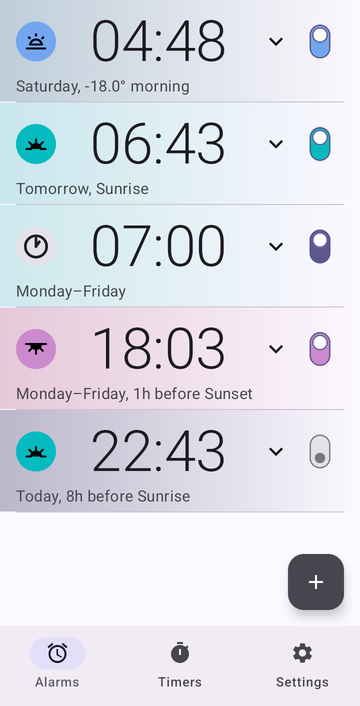
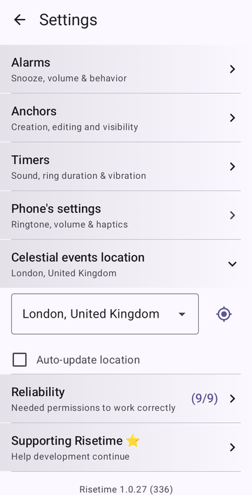
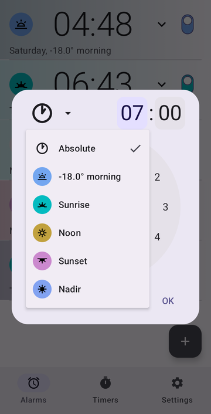
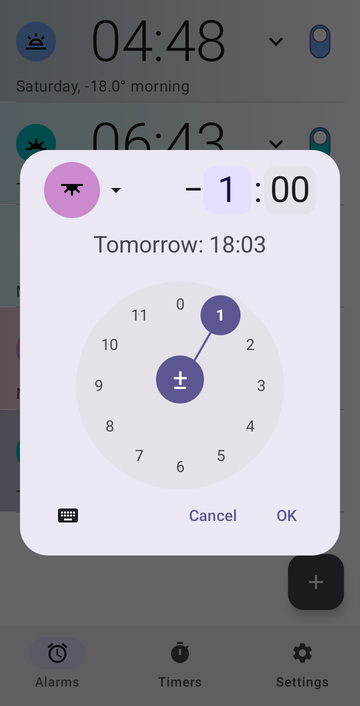
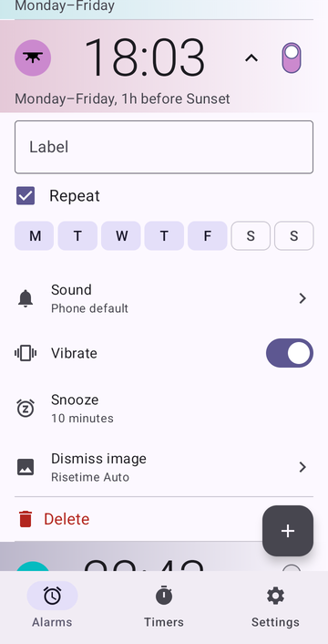
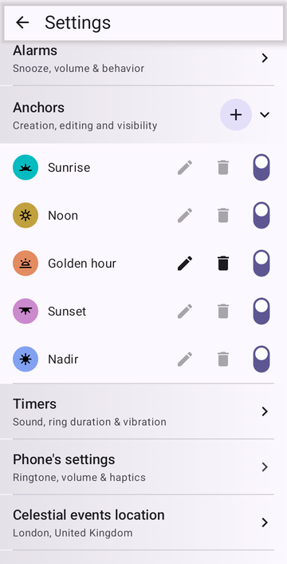
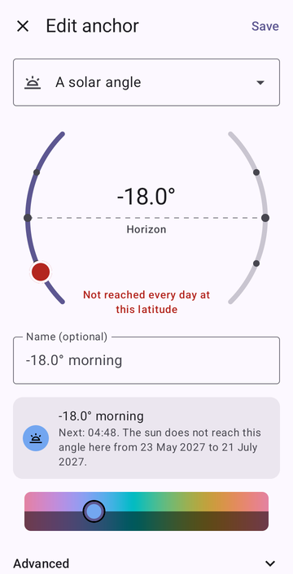

Alarms that follow the sun
Instead of a clock time, you can set an alarm on a moment of the sun — sunrise, sunset, solar noon. The alarm then follows that moment every day, as the seasons move it.

Set a regular alarm
- On the Alarms tab, press +.
- Set the time on the dial, or type it.
- Press OK.
That's a regular alarm, and it doesn't need anything else.
Set an alarm for sunrise or sunset
Risetime knows four moments of the sun out of the box: Sunrise, Sunset, Noon — solar noon, when the sun is at its highest, which is rarely 12:00 — and Nadir, the middle of the night, when the sun is at its lowest.
-
The first time, set your location. Sun times depend on where you are. Without a location, the alarm dialog simply says Set location in Settings.
Three ways to set it
In Settings → Celestial events location: pick your city from the list; or use your phone's GPS, once; or turn on Auto-update location, and it follows you when you travel. Your position stays on your phone: Risetime has no internet permission, so there is nowhere to send it.

The location setting, with its GPS button and auto-update box. - On the Alarms tab, press +.
- In the menu at the top, pick Sunrise, Sunset, Noon or Nadir.
- On the dial, set how long before or after it the alarm rings — or leave it at No offset.
- Press OK.

The offset: "1 hour before sunset"
An anchor is a moment of the sun that Risetime recomputes every day; your alarm stays at a fixed distance from it. That distance is the offset, up to 11 h 59 min before or after. The sun moment moves a little every day; the offset you chose does not.
- Sunrise, no offset — with the first light of the sun.
- 30 min before Sunrise — up before the light.
- 1 h before Sunset — a sunset alarm that leaves you time to head out while there is still daylight.
- 8 h before Sunrise — a bedtime reminder that follows the sun.
A line under the dial shows the next ring, for example Tomorrow: 18:03.

Repeat days, sound and snooze
Open the alarm's card in the list. Tick Repeat and choose your days, and the card reads the way you would say it: Monday–Friday, 1h before Sunset. The same card holds the label, the sound, vibration, snooze length and the image shown while it rings. The switch has three positions: the middle one skips only the next ring — for a day off — and keeps the alarm on.

Custom anchors: twilight, sun angles, shadows
The sun marks more moments than four. You can make your own, of three kinds:
- A solar angle — the moment the sun reaches a given height above or below the horizon, in the morning or the evening. −6° is civil dawn or dusk, −12° nautical, −18° astronomical: full night. +6° in the evening is low, warm light.
- A shadow length — the moment an object's shadow reaches a given multiple of its height, before or after noon.
- A fraction of the day or night — the night (sunset to sunrise) or the day, cut into equal parts; you choose how many, and which boundary. The last sixth of the night, for example, starts at the same point of the night whatever its length that season.
To create one:
- Open Settings → Anchors, then press +.
- Choose the kind, and set its value.
- Give it a name, or keep the automatic one.
- Pick a colour — Save waits for one.
- Press Save.
It now appears in the alarm dialog next to Sunrise and Sunset, and takes an offset like any other. A switch in the anchor list hides the ones you don't use from that menu.

An anchor can also be calibrated — shifted by up to 30 minutes so it matches a timetable you follow, such as a local calendar.
Far from the equator, some angles are never reached for part of the year. The editor tells you the dates — in London, the sun does not sink to −18° from late May to late July — and on those days the alarm stays silent rather than ring at an invented time.

How sunrise and sunset times are calculated, offline
Every sunrise and sunset time is computed on the device by an astronomical library, commons-suncalc, based on Jean Meeus' Astronomical Algorithms. Sunrise and sunset are measured for the sun's upper edge, with atmospheric refraction — what your eyes see; solar angles for the sun's centre, the convention twilight tables use. No web lookup, no server: it works in airplane mode, at sea, or in a valley without signal.
Risetime doesn't run all the time. It recalculates after an alarm rings, during a short check every few hours, or when the phone restarts or its clock or time zone changes; Android's own alarm clock — the one your built-in clock app uses — does the rest.
Make sure it rings
Some phones stop apps in the background to save battery, and that can silence any alarm. Settings → Reliability checks what your phone needs and gives each missing item a Fix button. After a restart, alarms ring even before you first unlock the phone.
Timers, too
The Timers tab holds countdown timers, including ones that restart themselves for intervals and study blocks: how the repeating timers work.
The free version holds three alarms and three timers. Supporters — a paid contribution, yearly or once — get unlimited ones.
Guides for specific uses
Set it once. It follows the sun.
Google Play Open testingRisetime is in open testing, so you join the test first and install from Play afterwards. Without that step Play may tell you the app isn't available in your country.